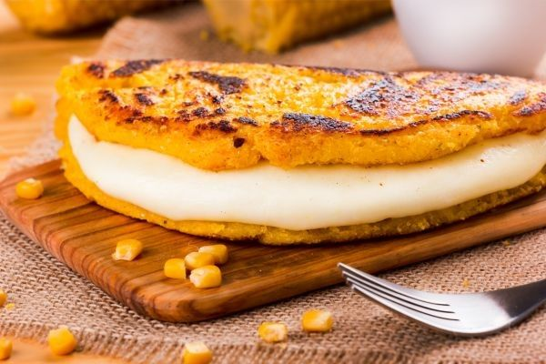
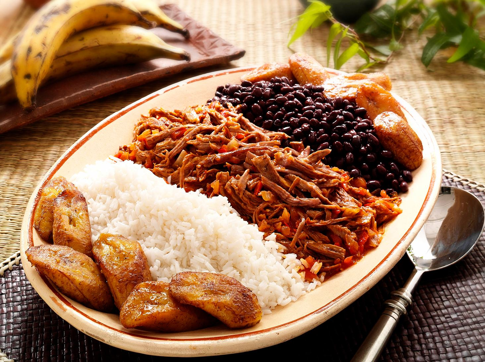
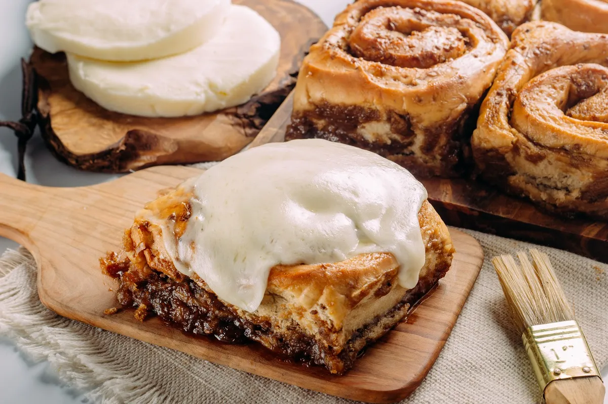

Cultura Venezolana
Descubre los sabores auténticos de la cocina tradicional venezolana
Arepas

Cachapa Venezolana

Criollo Venezolano

Descubre los sabores auténticos de la cocina tradicional venezolana


